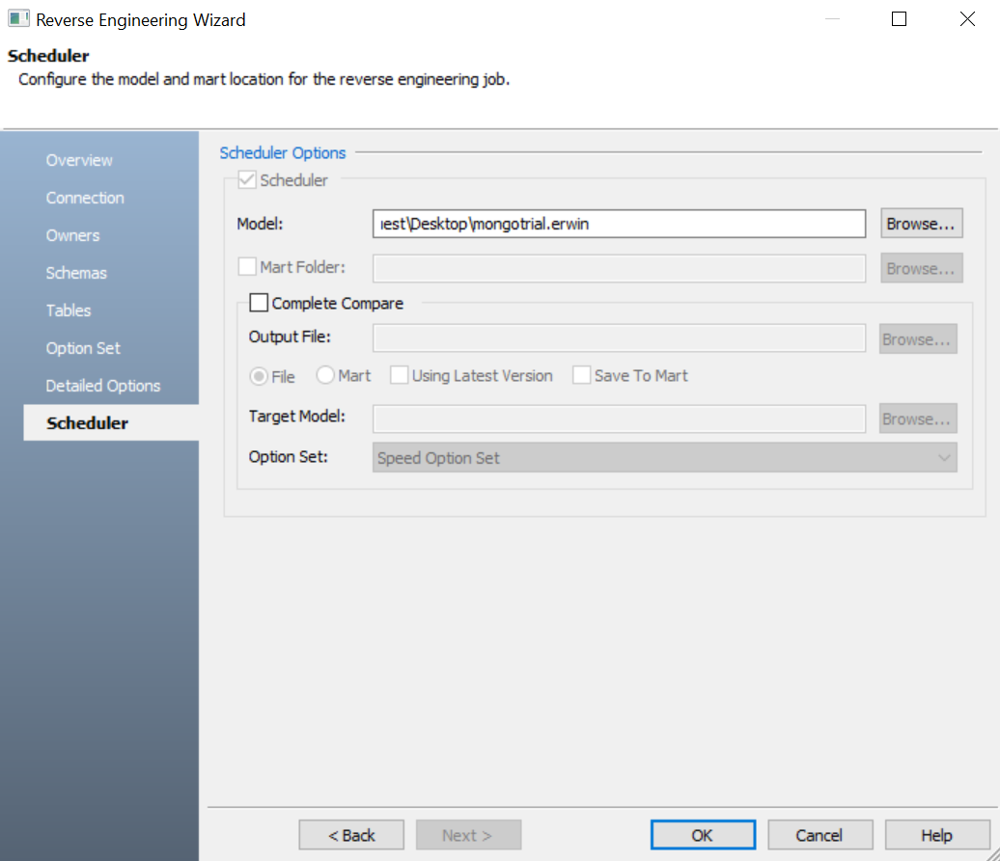

The Scheduler tab of the Reverse Engineering Wizard now provides options to run the Complete Compare process when you reverse engineering a model to the mart. This enables you to compare the reverse engineering result with the model in your mart. In case of differences, you can save the updates as the latest version of your model in the mart.

Refer to the following table for option description:
|
Parameter |
Description |
Additional Information |
| Mart Folder | Specifies the location/library in your mart where the reverse engineered model should be saved. |
To use this option, ensure that you are connected to a mart. For more information, refer to the Connecting to Mart topic. |
| Complete Compare | Specifies whether the Complete Compare (CC) process should run while reverse engineering | |
| Output File | Specifies the location of the CC output file generated after the reverse engineering process | |
| File | Specifies that the target model location is on the local system | |
| Mart | Specifies that the target model location is in the mart | |
| Using Latest Version | Specifies whether the target model is the latest version of the model in the mart | This option is available only when Mart is selected. |
| Save To Mart | Specifies whether the reverse engineered model is saved to the mart | This option is available only when Using Latest Version is selected. |
| Target Model | Specifies the location of the target model for CC | |
| Option Set | Specifies the option set that must be used for CC |
Advanced Default Option Set: Indicates that all erwin DM metadata is included. CC works slowest with this option. Speed Option Set: Indicates that only the essential metadata is included. CC works the fastest with this option set. Standard Default Option Set: Indicates that standard metadata is included. CC works fast with this option set compared to the Advanced option set. |